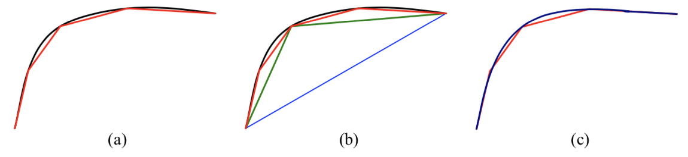
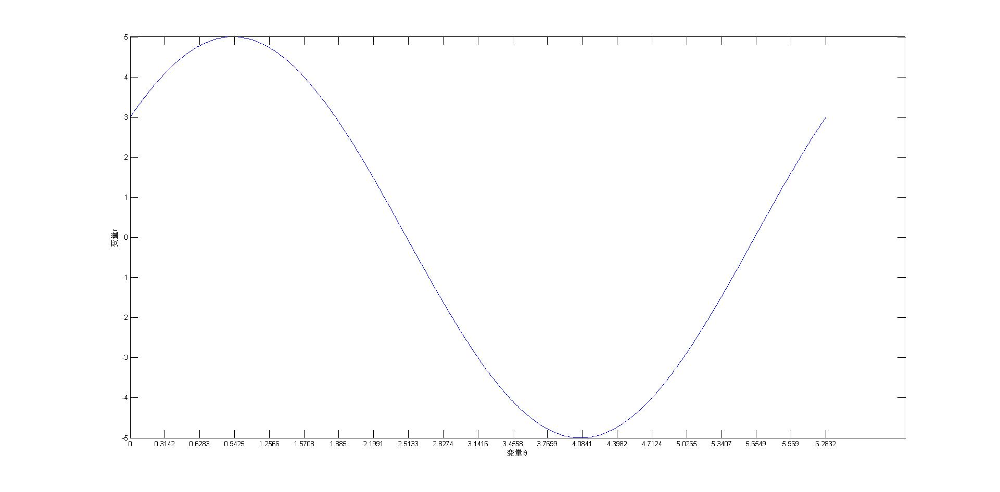
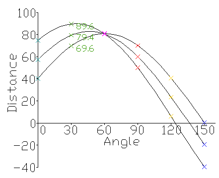

尽管边缘和一-般曲线适合用来描述自然物体的轮廓，但人类世界中直线段到处
都是。检测和匹配这些线条对于很多应用很有用，包括建筑学上的建模、城市环境
下的姿态估计以及书面文档版式分析。
本节将首先描述一些使用分段线性折线来近似曲线的算法，然后讲解一下Hough Transform，使得即使存在间隙和遮挡的时候，它都可以用于将边界元聚集成线片段。最后描述怎样将拥有”共同消失点（vanishing point）“的3D直线聚集在一起。
1.1 逐次近似

用折线或者b样条曲线来近似一~个曲线(用黑色表示): (a)原始 曲线用一个红色
的折线来近似:(b)通过迭代地寻找与目前的近似离得最远的点做逐次近似;(c)拟合折线
顶点的光滑的内插样条用深蓝色显示。
“直线简化”最简单的方法就是通过递归地细分连接两个端点的直线最远的曲线点来近似曲线。如果需要一个更平滑的表示或者可视化，就可以使用近似线或者插值样条或是曲线本身。
1.2 标准Hough变换
定义
霍夫变换(Hough Transform)是图像处理中的一种特征提取技术，可以识别图像中的几何形状。它将图像空间中的特征点映射到参数空间进行投票，通过检测累计结果的局部极值点得到一个符合某特定形状的点的集合。经典霍夫变换用来检测图像中的直线，后来霍夫变换扩展到任意形状物体的识别，多为圆和椭圆。它的抗噪声、抗形变能力较强。另一种直线提取的方法是对图像边缘点进行链码追踪，在得到的链码串中提取直线。
霍夫变换将在一个空间中具有相同形状的曲线或直线映射到另一个坐标空间的一个点上形成峰值，从而把检测任意形状的问题转化为统计峰值问题。
原理
霍夫变换最简单的是检测直线。我们知道，直线的方程表示可以由斜率和截距表示（这种表示方法，称为斜截式），如下所示：
如果用参数空间表示则为$(b,m)$,即用斜率和截距就能表示一条直线。
但是这样会参数问题，垂直线的斜率不存在（或无限大），这使得斜率参数$m$的值接近于无限。为此，为了更好的计算，Richard O. Duda和Peter E. Hart在1971年4月，提出了Hesse normal form(Hesse法线式)
其中$r$是原点到直线上最近点的距离(其他人可能把这记录为$ρ$，下面也可以把rr看成参数$ρ$)，$θ$是$x$轴与连接原点和最近点直线之间的夹角。如图所示。

因此，可以将图像的每一条直线与一对参数($(r,θ)$相关联。这个参数$(r,θ)$平面有时被称为霍夫空间，用于二维直线的集合。
经过Hough变换，将图像空间中经过一个点的所有直线映射到Hough空间，如下图示。

Matlab代码如下：
1 | % 一个点的坐标为（3,4） |
所以我们可以得到一个结论，给定平面中的单个点，那么通过该点的所有直线的集合对应于$(r,θ)$平面中的正弦曲线，这对于该点是独特的。一组两个或更多点形成一条直线将产生在该线的$(r,θ)$处交叉的正弦曲线。因此，检测共线点的问题可以转化为找到并发曲线的问题。

如上图所示，粉红色交点即为三个点共现的直线。
所以Hough 变换在图像直线检测的操作步骤如下：
1、读取原始图并转换为灰度图，采用边缘检测算子（如Canny）转换成二值化边缘图像；
2、顺序搜索边缘图像中的每一个黑点，在霍夫空间中依次画出正弦曲线，根据各个正弦曲线的交点情况，在累加器的对应位置加1。（累加器为二维数组$\left(\lambda^{}, \theta^{}\right)$，存放着对应参数的个数）；
3、求出累加器中局部极大值，其位置为$\left(\lambda^{\prime}, \theta^{\prime}\right)$；
4、通过累加器得出的位置$\left(\lambda^{\prime}, \theta^{\prime}\right)$得出图像中对应的直线。
1.3 消失点检测
【待补充】